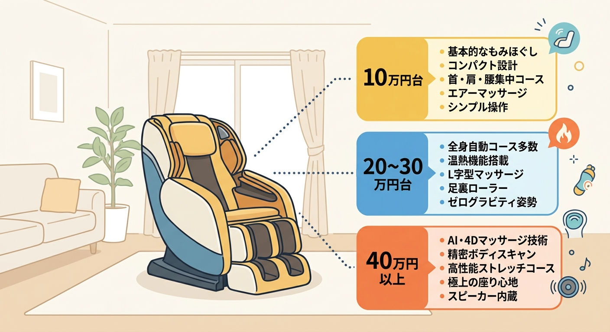
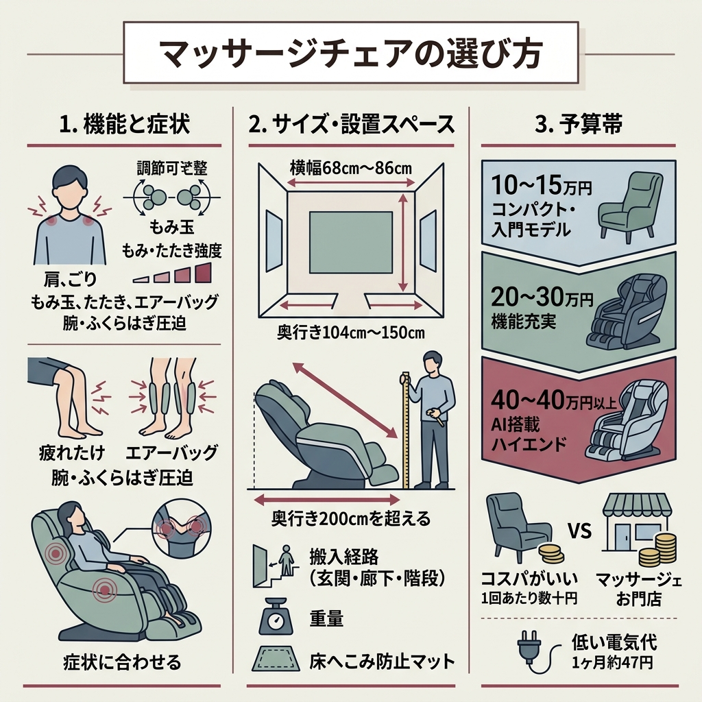
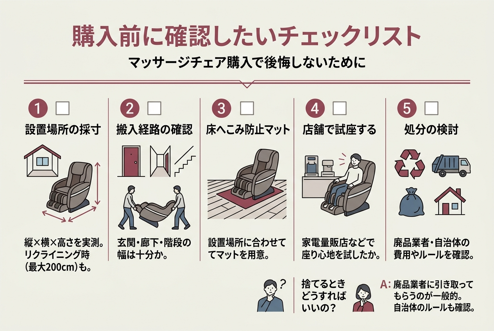

マッサージチェアって、調べれば調べるほど種類が多くて迷いませんか。価格帯は10万円台から60万円超まであって、メーカーもパナソニック・フジ医療器・ファミリーイナダ・スライヴと幅広いんですよね。
今回、価格.comの売れ筋ランキングやエディオン・フジ医療器公式ショップなど複数の情報源を読み比べて、2026年4月時点で手に入るおすすめモデルを10台に絞りました。「結局どれがいいの？」という方向けに、まず比較表から載せています。
マッサージチェアって高いし大きいし、失敗したくないんだけど……
まず比較表で価格とサイズをざっと把握して、そのあと気になる機種だけ読むのがおすすめですよ。
価格.comの人気売れ筋ランキングやエディオンの特集ページを参考に、2026年4月時点で購入できるモデルを10台ピックアップしました。価格は調査時点の最安値です。
| 商品名 | 価格目安 | 重量 |
|---|---|---|
| パナソニック スリムプロ EP-MA61 | 約257,000円 | 73kg |
| フジ医療器 SYNCA CirC GRACE MR385 | 約153,000円〜 | 60kg |
| パナソニック リアルプロ EP-MA121 | 約643,000円 | 91kg |
| フジ医療器 CYBER-RELAX AS-R2300 | 約520,000円〜 | 96kg |
| フジ医療器 RELAX MASTER AS-R620 | 約198,000円〜 | 61kg |
| ファミリーイナダ アイフィット FIP-6208J | 約204,000円 | 69kg |
| フジ医療器 CYBER-RELAX AS-R2200 | 約375,000円〜 | 96kg |
| フジ医療器 CYBER-RELAX AS-R900 | 約279,800円 | 84kg |
| スライヴ くつろぎ指定席 CHD-9220 | 約108,900円 | 44kg |
| フジ医療器 トラディS TR-40 | 約198,000円 | ※公式サイト確認 |

上位記事を全部読み比べてみると、選び方の軸は大きく3つに集約されます。順番に見ていきましょう。
もみ玉の「もみ」「たたき」に加えて、エアーバッグで腕やふくらはぎを圧迫するモデルが増えています。肩こりがメインなら「もみ」の強さ調節が細かいモデルが合いますし、脚のむくみが気になるなら脚部エアー搭載モデルを選ぶのがおすすめです。
フジ医療器のGRIP式メカやパナソニックの温感モミ玉など、メーカーごとに得意技が違うんですよね。カタログスペックだけでは体感が分からないので、できれば家電量販店で実際に座ってみてください。
リクライニングしたときの奥行きが200cmを超えるモデルもあります。横幅68cm〜86cm、奥行き104cm〜150cmと幅があるので、設置場所の実寸を測っておくのが鉄則です。
ざっくり分けるとこんな感じです。
「毎日使うなら1回あたり数十円」と考えれば、マッサージ店に通うよりコスパがいいケースも多いです。フジ医療器のトラディS TR-40は1ヶ月の電気代が約47円（1日30分使用）とのことなので、ランニングコストはほぼ気にならないレベルですね。
価格.comの人気売れ筋ランキングで1位を獲得しているモデルです。横幅わずか68cmで、マッサージチェアとしてはかなりスリム。リビングに置いても圧迫感が少ないのが支持されている理由みたいですね。
「温感モミ玉」を搭載していて、もみ玉自体が温まりながらほぐしてくれます。レビューでは「温かさが気持ちいい」「サイズと機能のバランスがいい」という声が目立ちました。座面幅は約45cmとゆったりめです。
最安値は約257,000円。レビュー平均は4.68点（9人）で、10台のなかではレビュー数が最も多いモデルになっています。
フジ医療器が展開する「SYNCA」ブランドのモデルで、見た目のスタイリッシュさが際立ちます。重量60kgと、フル機能モデルとしてはかなり軽い部類。
自動コースは8種類あって、「疲労回復/全身ストレッチ」「首肩中心」「腰中心」「骨盤中心」に加え、「全身リズミカル」「全身ゆったり」「エアー」の新コースも搭載されています。もみの強さは4段階で調節できるとのこと。
公式ショップでは199,800円、価格.comの最安値は約153,000円です。消費電力80Wと省エネ設計なのもうれしいポイントですね。レビュー平均は5.00点（3人）で、満足度が高い印象を受けました。
デザイン重視で選びたいんだけど、機能面は大丈夫？
8コース搭載でもみ4段階調節もあるので、見た目だけのモデルではないですよ。W70×D110cmとサイズもコンパクトです。
パナソニックのフラッグシップモデル。最安値で約643,000円と、今回紹介する10台のなかで最も高額です。
最小10mmという繊細なもみ玉の動きでコリをピンポイントにとらえる設計になっています。AI制御で体型を検知し、もみ圧を自動調整してくれるのが大きな特徴。エアー圧力も3段階で設定できます。
サイズはW85×H122×D135cm、重量91kg。さすがにフラッグシップだけあって大きいです。リクライニング時はW85×D200cmになるので、設置場所はしっかり確保してください。
「家電大賞 2025-2026 健康家電部門 金賞」を受賞したモデルで、唐沢寿明さんのCMでも話題になりました。フジ医療器のフラッグシップに位置づけられています。
価格帯は520,000円〜648,000円。サイズはW85×H124×D141cm、重量96kgと今回最大・最重量クラスです。公式ショップでは40,001円の値下げがあり、648,000円で販売されています（旧価格688,001円）。
レビュー平均は4.82点（2人）。フジ医療器公式ショップではリファービッシュ品が498,000円で出ていることもあるみたいですね。
「GRIP式メカ4.0」という、つかんでほぐす動きを再現した機構を搭載しているモデルです。腕・肩・脚・足の各部位に計22個のエアーバッグを内蔵していて、全身をまんべんなくカバーしてくれます。
サイズはW70×H107×D107cmで、フルスペックモデルとしてはコンパクトな部類。重量も61kgに抑えられています。
価格は約198,000円〜228,000円。公式ショップでは10,000円値下げされて228,000円になっていました。レビュー平均4.57点（3人）です。
ファミリーイナダはマッサージチェア専業メーカーで、「AIハイブリッドメカ」や姿勢調整システムなど独自技術を持っています。このFIP-6208Jはマッサージメカがお尻まで届く設計になっていて、デスクワークで疲れがたまりやすいお尻の筋肉にもアプローチできるのが特徴です。
サイズはW74×H104×D150cm、重量69kg。最安値は約204,000円です。スペックの詳細は公式サイトで確認してみてください。
AS-R2300のひとつ前のモデルですが、こちらも十分ハイスペックです。「5D-AIメカPLUS」を搭載していて、AIが筋肉のコンディションを分析し、力加減を自動で最適化してくれます。
8種類のつかみ技を含む全53タイプのポイント集中マッサージを搭載。「AIダブルセンシングプラス」で1人ひとりに合わせたマッサージを実現しているとのこと。リラクゼーション重視なら「マインドフルネス」コンセプトの30分自動コースも用意されています。
価格は約375,800円〜398,000円。レビュー平均4.18点（6人）で、口コミ数は今回紹介するモデルの中で2番目に多い。実際のユーザーの声が参考になりやすいモデルですね。重量は96kgあるので、搬入計画は入念に。
「4D Driveメカ」を搭載したハイエンドモデルで、3D（縦/横/前後）に加えて緩急（速度変化）を加えた4次元の動きを実現しています。
ふくらはぎから太ももまでの大きな筋肉にアプローチする「16アームローラー3Dメカ」を搭載。足裏の気になる部分をケアする「フットライドメカ」、そして腕まわりのポイント設定が可能な「アクティブウィング」もあります。
最安値は約279,800円。サイズはW73×H118×D134cm、重量84kg。レビュー平均5.00点（1人）です。
今回紹介する10台の中で最安値の約108,900円。しかも重量44kgと圧倒的に軽いんですよ。「まずはマッサージチェアを試してみたい」という方にちょうどいいエントリーモデルです。
5種類の自動マッサージと手動マッサージが選べて、15分で自動停止するオートタイマー付き。もみ玉・エアーバッグ・もみボードとローラーで、肩から足の裏まで全身をカバーしてくれます。電動リクライニングは約115〜145度で調整可能です。
フジ医療器の人気シリーズ「トラディS」の機種で、コンパクトながら全身をしっかりもみほぐすのがコンセプト。初めてGRIP式メカ3.0を搭載した入門〜中級向けモデルです。
360度回転するもみ玉で「もみ・たたき・さざなみ・背すじ伸ばし」の4種類の技を再現。16個のエアーバッグで肩・腕・骨盤・脚を圧迫します。リクライニング角度は最大169度で、ほぼフラットになるのでストレッチにも使えます。
サイズは通常時W69×D120×H106cm。肩の強弱は5段階、背は2段階、腰は5段階で調節可能。1ヶ月の電気代が約47円（1日30分使用）というのは、調べた中でも具体的な数字を出している貴重なデータです。価格は約198,000円。

マッサージチェアは「買って後悔した」という声も少なくない家電です。ある体験談記事では「大きすぎた」「重くて動かせない」「飽きがきた」「処分が難しい」が4大後悔ポイントとして挙げられていました。
処分のことまで考えてなかった……。捨てるときどうすればいいの？
廃品業者に引き取ってもらうのが一般的です。サイズが大きく重いぶん、手間とコストがかかるので、購入前に自治体のルールも確認しておくと安心ですよ。
上位記事を横断して調べた結果、主要3メーカーの得意分野はこんなふうに分かれていました。
日本で初めてマッサージチェアを開発したパイオニア。GRIP式メカやAI搭載モデルなど、技術の幅が広い。今回10台中6台がフジ医療器で、選択肢の豊富さは随一です。
もみ玉が強く、しっかりしたマッサージを好む方向け。温感モミ玉やAI制御など、家電メーカーらしいテクノロジーの強さがあります。「リアルプロ」「スリムプロ」の2シリーズで展開。
マッサージチェア専業メーカー。「光センサー指圧点自動検索システム」で体を検知し、手や指の形を再現したもみ玉で施術するのが特徴。医療寄りのアプローチに強みがあります。
フジ医療器は、健康・美容機器の製造販売メーカーです。手技のようなもみほぐしを再現しているため、日頃のケアにおすすめです。
日本直販（666-666.jp）掲載情報より
10台を調べ比べてみて思ったのは、「全部入りの完璧な1台」は存在しないってことです。コンパクトさを取ればハイエンド機能は削られるし、AI搭載のフラッグシップは重量96kgで簡単には動かせない。
個人的には、まず家電量販店で2〜3台に座り比べてから決めるのが間違いないと思います。スペック表だけでは分からない「もみ心地」って、本当に座らないと判断できないので。